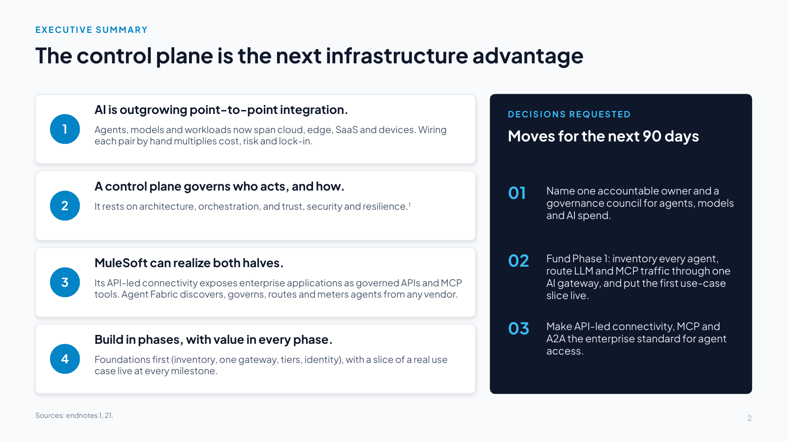
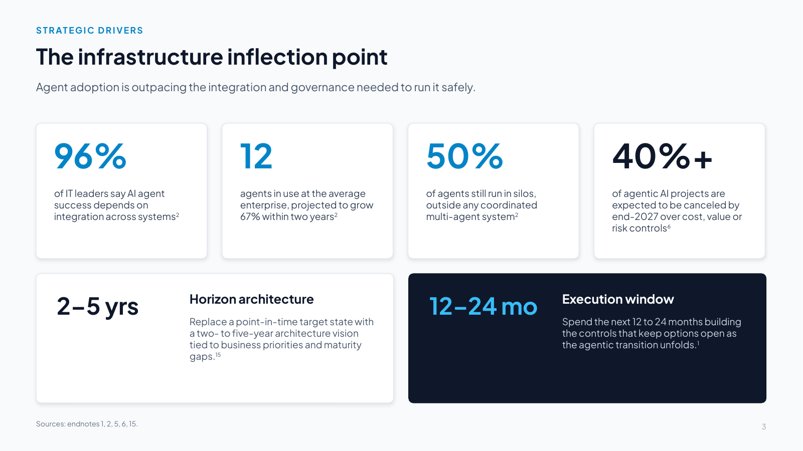
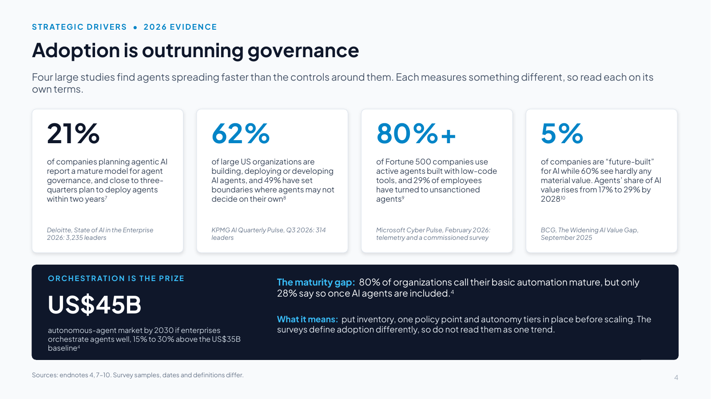
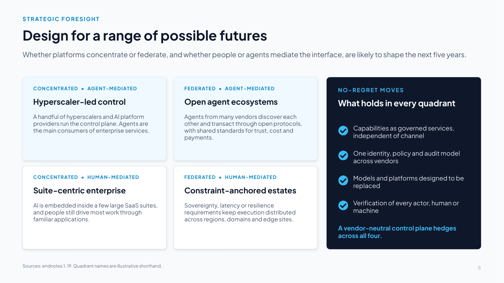
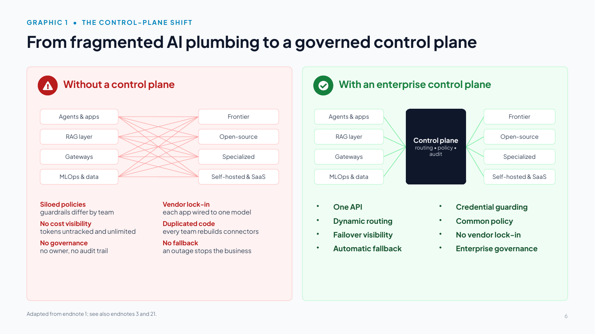
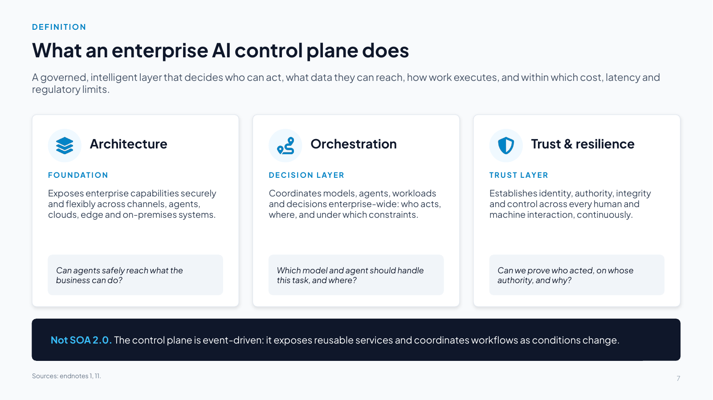
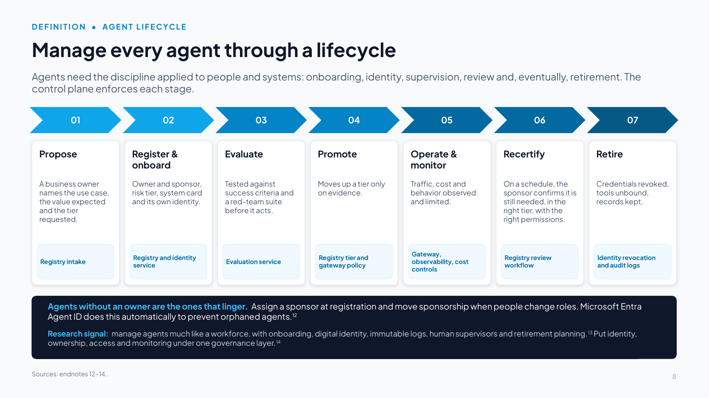

Slides 1–8
Why a control plane, and what it is
Slide 1 The AI Control Plane

Download slide 1 as a PowerPoint file (.pptx, 62 KB, with speaker notes)
Slide text
Orchestrating intelligence across the agentic enterprise
Architecture
Orchestration
Trust & resilience
John Fisher | 2026
Speaker notes
Welcome executive leadership. Today we examine why standard cloud and application architectures are buckling under agentic AI. As enterprises transition from passive chatbots to autonomous, multi-agent systems, models alone will no longer provide competitive advantage, which will come instead from the intelligence control plane that orchestrates them.
Framing for this audience: this briefing explains what an enterprise AI control plane is and turns it into a north-star architecture and a 12- to 24-month plan that delivers value in every phase. Along the way we show where MuleSoft’s API-led connectivity (exposing enterprise applications as governed APIs and MCP tools) and MuleSoft Agent Fabric (the control plane for agents built on any platform) fit.
We then walk through three reference use cases, in professional services, capital markets and energy, and close with three decisions for the next 90 days.
Bracketed numbers in these notes refer to the endnotes in the handbook's Appendix B.
John Fisher works for Salesforce. The views here are his own, not Salesforce’s, and are drawn from public information; this deck is not affiliated with or endorsed by Salesforce. Product names are trademarks of their owners. Illustrative figures are not results from any customer.
Slide 2 The control plane is the next infrastructure advantage

Download slide 2 as a PowerPoint file (.pptx, 63 KB, with speaker notes)
Slide text
1. AI is outgrowing point-to-point integration.
Agents, models and workloads now span cloud, edge, SaaS and devices. Wiring each pair by hand multiplies cost, risk and lock-in.
2. A control plane governs who acts, and how.
It rests on architecture, orchestration, and trust, security and resilience.1
3. MuleSoft can realize both halves.
Its API-led connectivity exposes enterprise applications as governed APIs and MCP tools. Agent Fabric discovers, governs, routes and meters agents from any vendor.
4. Build in phases, with value in every phase.
Foundations first (inventory, one gateway, tiers, identity), with a slice of a real use case live at every milestone.
DECISIONS REQUESTED
Moves for the next 90 days
01. Name one accountable owner and a governance council for agents, models and AI spend.
02. Fund Phase 1: inventory every agent, route LLM and MCP traffic through one AI gateway, and put the first use-case slice live.
03. Make API-led connectivity, MCP and A2A the enterprise standard for agent access.
Speaker notes
Talk track (two minutes):
- AI is spreading across clouds, applications, devices and the edge. Infrastructure now has to coordinate models, agents, workloads and decisions as well as host applications.
- The answer is an enterprise control plane: a governed layer that decides who can act, what data can be accessed, how workloads run, and within which cost, latency and regulatory limits [1]. It rests on three capabilities: architecture, orchestration, and trust/security/resilience.
- MuleSoft can realize both halves of that problem. Its API-led connectivity turns systems of record into governed APIs and MCP tools so agents can act. Agent Fabric is the control plane that discovers, governs, orchestrates and meters agents built on any platform [21].
- The priority for the next 12 to 24 months is to architect a stronger foundation, not to complete the agentic transition [1]. That does not mean waiting for returns: each phase also puts a slice of a real use case into production, so value arrives from the first milestone and each phase is funded against the value the previous one proved [79][81].
Close this slide with the three asks on the right. We return to them at the end.
Slide 3 The infrastructure inflection point

Download slide 3 as a PowerPoint file (.pptx, 63 KB, with speaker notes)
Slide text
Agent adoption is outpacing the integration and governance needed to run it safely.
96%
of IT leaders say AI agent success depends on integration across systems2
12. agents in use at the average enterprise, projected to grow 67% within two years2
50%
of agents still run in silos, outside any coordinated multi-agent system2
40%+
of agentic AI projects are expected to be canceled by end-2027 over cost, value or risk controls6
2–5 yrs
Horizon architecture
Replace a point-in-time target state with a two- to five-year architecture vision tied to business priorities and maturity gaps.15
12–24 mo
Execution window
Spend the next 12 to 24 months building the controls that keep options open as the agentic transition unfolds.1
Speaker notes
Emphasize the urgency: organizations that wait 24 months to address agent orchestration risk severe technical debt. Industry evidence shows point-to-point LLM integrations are already straining under production cost and compliance pressures, so leaders must establish an enterprise control layer now.
Supporting data:
- 2026 Connectivity Benchmark (Salesforce/MuleSoft, 1,050 IT leaders surveyed late 2025) [2][5]: 96% say agent success depends on integration across systems. Organizations use an average of 12 agents, a number projected to climb 67% within two years, and 50% of agents operate in isolated silos. Of those surveyed, 86% agree that without proper integration agents add complexity rather than value, and 82% cite data integration as one of their biggest AI challenges.
- Gartner predicts that more than 40% of agentic AI projects will be canceled by the end of 2027 because of escalating costs, unclear business value or inadequate risk controls [6].
- Agentic enterprises need a "horizon architecture": a two- to five-year vision tied to business priorities and maturity gaps [15]. The 12- to 24-month priority is architecting the controls [1].
- The next slide adds four large 2026 studies that point the same way, and the size of the prize for orchestrating well.
Slide 4 Adoption is outrunning governance

Download slide 4 as a PowerPoint file (.pptx, 63 KB, with speaker notes)
Slide text
Four large studies find agents spreading faster than the controls around them. Each measures something different, so read each on its own terms.
21%
of companies planning agentic AI report a mature model for agent governance, and close to three-quarters plan to deploy agents within two years7
Deloitte, State of AI in the Enterprise 2026: 3,235 leaders
62%
of large US organizations are building, deploying or developing AI agents, and 49% have set boundaries where agents may not decide on their own8
KPMG AI Quarterly Pulse, Q3 2026: 314 leaders
80%+
of Fortune 500 companies use active agents built with low-code tools, and 29% of employees have turned to unsanctioned agents9
Microsoft Cyber Pulse, February 2026: telemetry and a commissioned survey
5%
of companies are “future-built” for AI while 60% see hardly any material value. Agents’ share of AI value rises from 17% to 29% by 202810
BCG, The Widening AI Value Gap, September 2025
ORCHESTRATION IS THE PRIZE
US$45B
autonomous-agent market by 2030 if enterprises orchestrate agents well, 15% to 30% above the US$35B baseline4
The maturity gap: 80% of organizations call their basic automation mature, but only 28% say so once AI agents are included.4
What it means: put inventory, one policy point and autonomy tiers in place before scaling. The surveys define adoption differently, so do not read them as one trend.
Sources: endnotes 4, 7–10. Survey samples, dates and definitions differ.
Speaker notes
Use this slide to show that the gap is not a vendor talking point. Four large 2026 studies, each with its own definition of adoption:
- Deloitte, State of AI in the Enterprise 2026 (3,235 business and IT leaders in 24 countries, surveyed August–September 2025): close to three-quarters of companies plan to deploy agentic AI within two years, but only 21% of them report a mature model for agent governance [7].
- KPMG AI Quarterly Pulse, Q3 2026 (314 US leaders at companies with revenue of $1 billion or more): 62% are building, deploying or developing AI agents, and 49% have set boundaries where agents may not make decisions on their own [8].
- Microsoft Cyber Pulse (February 2026): by Microsoft's own telemetry, more than 80% of Fortune 500 companies use active agents built with low-code or no-code tools, and a Microsoft-commissioned survey of more than 1,700 data security professionals found that 29% of employees have turned to unsanctioned AI agents [9].
- BCG, The Widening AI Value Gap (September 2025): 5% of companies are "future-built" for AI, 60% report hardly any material value, and AI agents' share of AI value is expected to rise from about 17% in 2025 to 29% by 2028 [10].
Do not chart these as one trend: they measure plans, building and active use, with different samples and dates.
The prize: Deloitte's 2026 technology predictions put the autonomous-agent market at about US$8.5 billion in 2026 and US$35 billion by 2030, and estimate that better orchestration and risk management could lift the 2030 figure by 15% to 30%, to as much as US$45 billion, and the same research found 80% call their basic automation mature, but only 28% once AI agents are included [4].
Slide 5 Design for a range of possible futures

Download slide 5 as a PowerPoint file (.pptx, 86 KB, with speaker notes)
Slide text
Whether platforms concentrate or federate, and whether people or agents mediate the interface, are likely to shape the next five years.
CONCENTRATED • AGENT-MEDIATED
Hyperscaler-led control
A handful of hyperscalers and AI platform providers run the control plane. Agents are the main consumers of enterprise services.
FEDERATED • AGENT-MEDIATED
Open agent ecosystems
Agents from many vendors discover each other and transact through open protocols, with shared standards for trust, cost and payments.
CONCENTRATED • HUMAN-MEDIATED
Suite-centric enterprise
AI is embedded inside a few large SaaS suites, and people still drive most work through familiar applications.
FEDERATED • HUMAN-MEDIATED
Constraint-anchored estates
Sovereignty, latency or resilience requirements keep execution distributed across regions, domains and edge sites.
NO-REGRET MOVES
What holds in every quadrant
Capabilities as governed services, independent of channel
One identity, policy and audit model across vendors
Models and platforms designed to be replaced
Verification of every actor, human or machine
A vendor-neutral control plane hedges across all four.
Sources: endnotes 1, 19. Quadrant names are illustrative shorthand.
Speaker notes
Two major uncertainties are likely to shape the next five years [1]: whether platforms become more concentrated or more federated, and whether interfaces remain human-mediated or become agent-mediated. Each combination implies different organizing logic, so optimizing for a single expected end state is risky.
Evidence from executive interviews [1] (paraphrased): a banking leader expects a handful of hyperscalers plus a few AI platform providers to dominate the control plane. A defense technology executive notes that sovereign AI may need a separate environment because data must stay pinned to a country. A pharma architecture director argues that multi-cloud only makes sense with a strong operational or resilience rationale, because every data movement adds cost and complexity.
The point for this room is that the control plane is how you hedge: if identity, policy, audit and routing live in a vendor-neutral layer, you can move between quadrants without re-platforming. This is "planned impermanence" [19]: replaceable components, explicit re-evaluation, and an architecture built to change.
Note: the quadrant names on the slide are illustrative shorthand.
Slide 6 From fragmented AI plumbing to a governed control plane

Download slide 6 as a PowerPoint file (.pptx, 72 KB, with speaker notes)
Slide text
Without a control plane
With an enterprise control plane
Agents & apps
Frontier
RAG layer
Open-source
Gateways
Specialized
MLOps & data
Self-hosted & SaaS
Agents & apps
Frontier
RAG layer
Open-source
Gateways
Specialized
MLOps & data
Self-hosted & SaaS
Control plane
routing • policy • audit
Siloed policies
guardrails differ by team
No cost visibility
tokens untracked and unlimited
No governance
no owner, no audit trail
Vendor lock-in
each app wired to one model
Duplicated code
every team rebuilds connectors
No fallback
an outage stops the business
One API
Dynamic routing
Failover visibility
Automatic fallback
Credential guarding
Common policy
No vendor lock-in
Enterprise governance
Speaker notes
Highlight the contrast depicted here [1]. On the left is the default path: every team purchases separate subscriptions, writes bespoke API wrappers, and stores API keys in plaintext environment variables. On the right, the control plane normalizes ingestion, decouples models from applications, and enforces uniform compliance.
Additional talking points:
- The right-hand panel lists the target outcomes (the author's synthesis): one API, dynamic routing, failover visibility, automatic fallback, credential guarding, common policy, no vendor lock-in and enterprise governance. The principles behind them come from [1]: dynamic routing, common policy, governed model choice per task within cost, latency and regulatory limits, and avoiding lock-in. The gateway features map to MuleSoft Agent Fabric [21].
- The Forbes article [3] (a Nutanix-sponsored BrandVoice piece, July 2026) explains why the left side breaks at scale: agents generate thousands of small, context-heavy calls across models and tools, so token costs become unpredictable and governance has to be designed in rather than patched later.
- MuleSoft mapping: AI Gateway is the "one API" on the right, Agent Registry and Scanners fix "no governance", Trusted Agent Identity addresses credential guarding, and cost controls and model routing address cost blindness [21].
Slide 7 What an enterprise AI control plane does

Download slide 7 as a PowerPoint file (.pptx, 82 KB, with speaker notes)
Slide text
A governed, intelligent layer that decides who can act, what data they can reach, how work executes, and within which cost, latency and regulatory limits.
Architecture
FOUNDATION
Exposes enterprise capabilities securely and flexibly across channels, agents, clouds, edge and on-premises systems.
Can agents safely reach what the business can do?
Orchestration
DECISION LAYER
Coordinates models, agents, workloads and decisions enterprise-wide: who acts, where, and under which constraints.
Which model and agent should handle this task, and where?
Trust & resilience
TRUST LAYER
Establishes identity, authority, integrity and control across every human and machine interaction, continuously.
Can we prove who acted, on whose authority, and why?
Not SOA 2.0. The control plane is event-driven: it exposes reusable services and coordinates workflows as conditions change.
Speaker notes
Definition: the enterprise control plane is a governed, intelligent layer that mediates decisions across systems: who can act, what data can be accessed, how workloads execute, and how agents operate within defined cost, latency and regulatory boundaries [1]. It resembles service-oriented architecture but is more event-driven: it coordinates workflows as conditions evolve rather than simply exposing reusable services.
The control plane rests on architecture (the foundation), orchestration (the decision layer) and trust, security and resilience (the trust layer).
Deeper research (HCLTech [11]): evaluate platforms by what they govern as well as by what they do. Control planes compete for authority, and once embedded they shape how every other system connects. HCLTech names identity (authority), work orchestration (coordination), developer value chains (execution), data governance (intelligence) and hybrid infrastructure (resilience and sovereignty) as the consequential planes, and warns that an agent without identity constraints is automation without accountability [11]. Fragmented control planes raise integration cost, risk exposure and inconsistency. Most enterprises span several ecosystems, so the real challenge is orchestrating control planes across them, which opens the way for a vendor-neutral agent control plane.
Slide 8 Manage every agent through a lifecycle

Download slide 8 as a PowerPoint file (.pptx, 64 KB, with speaker notes)
Slide text
Agents need the discipline applied to people and systems: onboarding, identity, supervision, review and, eventually, retirement. The control plane enforces each stage.
01. Propose
A business owner names the use case, the value expected and the tier requested.
Registry intake
02. Register & onboard
Owner and sponsor, risk tier, system card and its own identity.
Registry and identity service
03. Evaluate
Tested against success criteria and a red-team suite before it acts.
Evaluation service
04. Promote
Moves up a tier only on evidence.
Registry tier and gateway policy
05. Operate & monitor
Traffic, cost and behavior observed and limited.
Gateway, observability, cost controls
06. Recertify
On a schedule, the sponsor confirms it is still needed, in the right tier, with the right permissions.
Registry review workflow
07. Retire
Credentials revoked, tools unbound, records kept.
Identity revocation and audit logs
Agents without an owner are the ones that linger. Assign a sponsor at registration and move sponsorship when people change roles. Microsoft Entra Agent ID does this automatically to prevent orphaned agents.12
Research signal: manage agents much like a workforce, with onboarding, digital identity, immutable logs, human supervisors and retirement planning.13 Put identity, ownership, access and monitoring under one governance layer.14
Speaker notes
Recertification and retirement are the stages most programs skip. The registry and the kill switch are already in the design. This slide makes the whole lifecycle explicit, with the control-plane capability that enforces each stage.
- Propose: a business owner names the use case, the expected value and the autonomy tier requested. Intake happens in the agent registry.
- Register and onboard: the agent gets an owner and a sponsor, a risk tier, a system card and its own identity.
- Evaluate: it is tested against its success criteria and a red-team suite before it acts.
- Promote: it moves up a tier only on evidence (see the tier slides).
- Operate and monitor: its traffic, cost and behavior are observed and limited by the gateway and observability.
- Recertify: on a schedule, its sponsor confirms it is still needed, in the right tier and with the right permissions.
- Retire: credentials revoked, tools unbound, records kept.
Research: Deloitte's Tech Trends 2026 recommends managing agents much like a workforce, with onboarding, digital identities, immutable logs of every action, human supervisors at key decision points and, eventually, retirement planning [13]. Microsoft's Cloud Adoption Framework calls for a centralized agent governance layer that enforces consistent identity, ownership, access control and continuous monitoring for all agents [14]. Microsoft Entra Agent ID moves sponsorship automatically when a sponsor changes roles or leaves, to prevent orphaned agents [12].